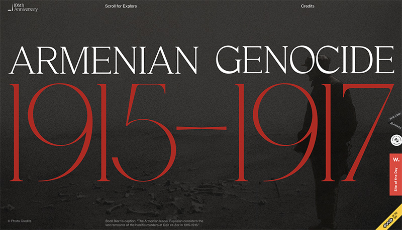

Armenian Genocide
I found this website a few months ago when I was browsing the Awwwards site. What really stood out to me was the beautiful animation that takes place through the entire user journey, presenting the information in a dynamic, interesting way. I specifically really like the way the type from the first heading breaks off and travels off the screen at the beginning, and then a horizontal red bar is joined with a vertical bar that travels upwards to form a cross as the user begins to scroll down the page. Besides the animation, the typography and red, black and white colour palette are absolutely stunning. There were numerous typefaces incorporated into this website but the ones I love the most are Haigrast Serif, Love, and Neue Haas Grotesk Display. I appreciate that this website is teaching the user about the Armenian Genocide in an aesthetically-pleasing way that will encourage them to read on and learn more about this tragedy.